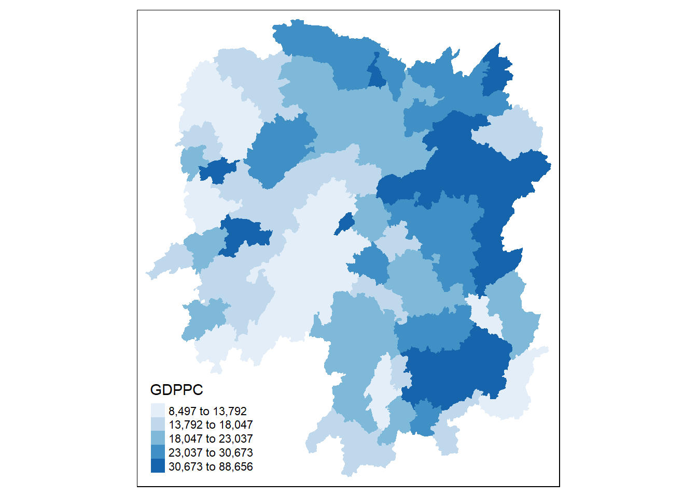
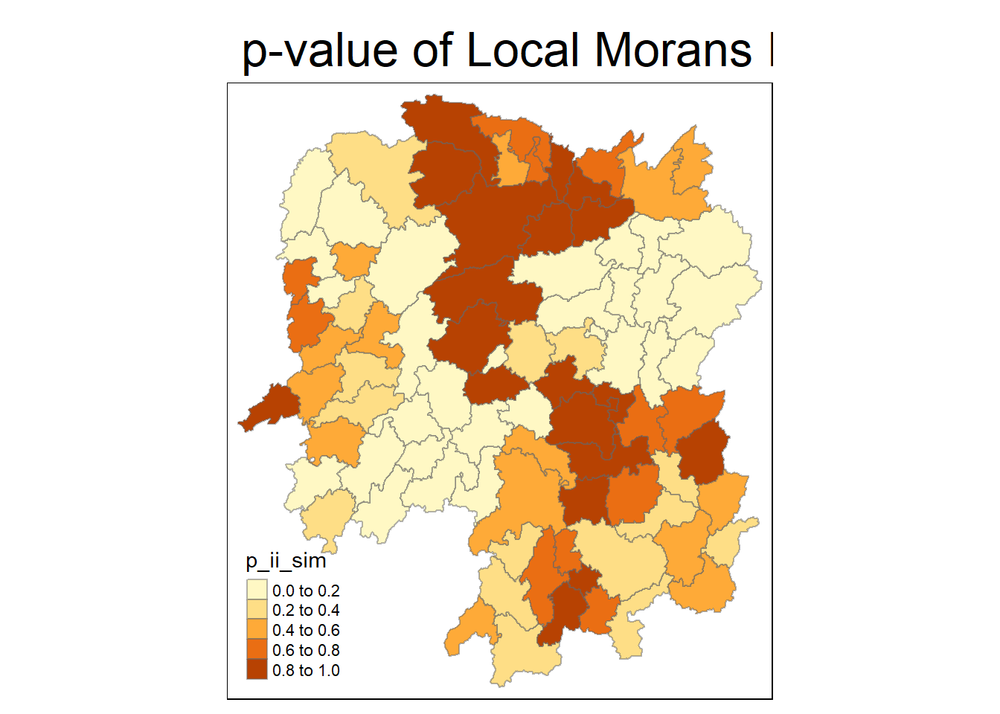
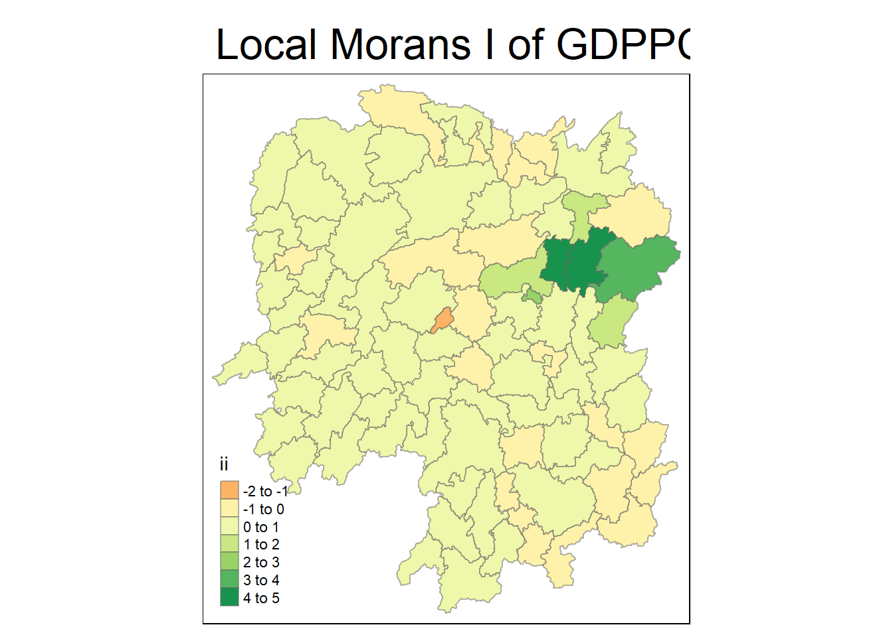
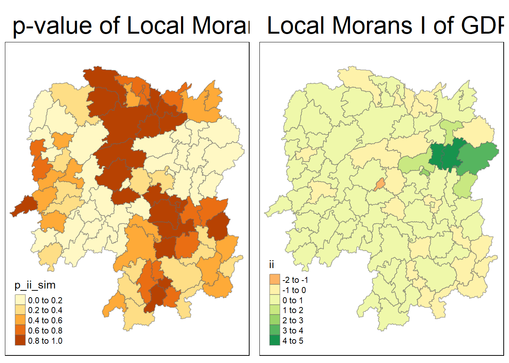
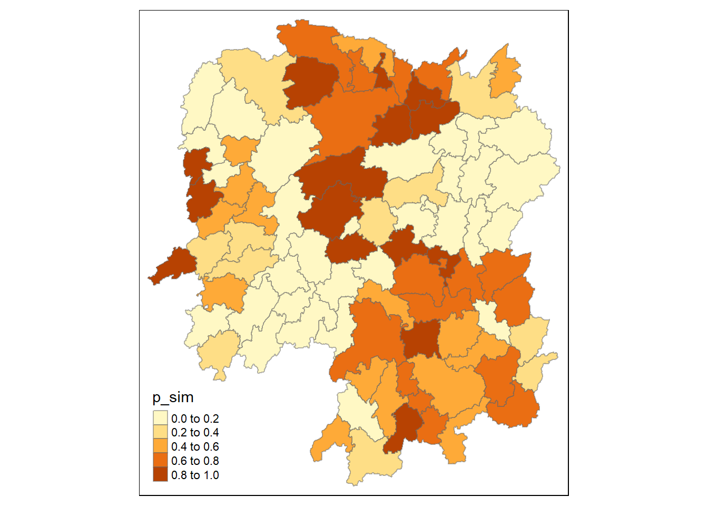
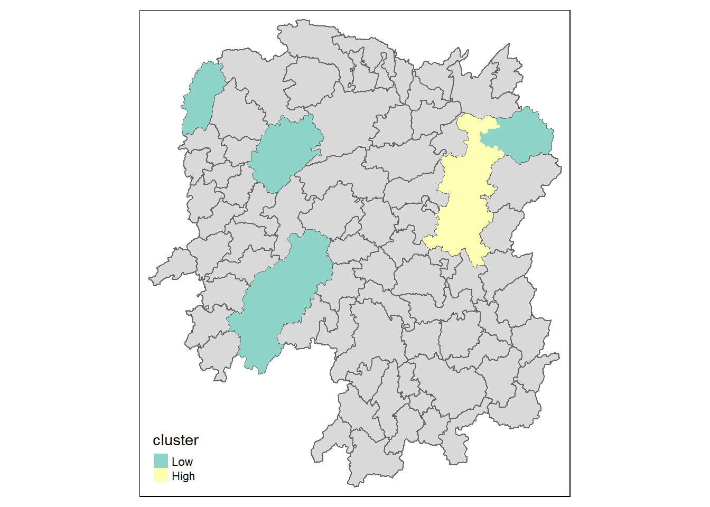

pacman::p_load(sf, spdep, tmap, tidyverse, sfdep)
set.seed(1234)In Class Exercise 5
5 Introduction
This exercise will help reinforce our learning from Hands on exercise 5. Additionally, we explore the sfdep package and its uses.
5.1 Objective
In spatial policy, a key objective for local governments and urban planners is to promote balanced development across the province. In this study, our goal is to apply appropriate spatial statistical methods to assess whether development is evenly distributed geographically in Hunan Province, People’s Republic of China, using GDP per capita as a development indicator.
If we find that development is not evenly distributed, our next step will be to investigate whether there are signs of spatial clustering. Should clustering be present, we will then identify the locations of these clusters. Through this exercise, we aim to uncover the spatial patterns of development in the province.
5.2 Data and Packages
For this exercise, we have the following two datasets:
Hunan province administrative boundary layer at county level. This is a geospatial data set in ESRI shapefile format.
Hunan_2012.csv: This csv file contains selected Hunan’s local development indicators in 2012.
The packages used are as follows:
sf: Provides simple features support for handling and analyzing spatial vector data in R.spdep: A package for spatial dependence and spatial regression analysis, particularly for handling spatial weights.tmap: A flexible visualization package for thematic maps, supporting both static and interactive mapping in R.tidyverse: A collection of R packages designed for data science, emphasizing data manipulation, visualization, and functional programming.sfdepis designed for spatial analysis, providing tools to work with spatial dependencies and spatial econometrics, particularly in conjunction with simple features (sf) objects. It helps analyze relationships and interactions between spatially distributed data.
We import these packages into our environment using the following code chunk.
5.3 Importing the Data
We will use the st_read() function of the sf package to import the Hunan Shapefile into our environment.
hunan <- st_read(dsn = "data/geospatial",
layer = "Hunan")Reading layer `Hunan' from data source
`C:\arjxn11\ISSS626-GAA\In-class_Ex\In-class_Ex5\data\geospatial'
using driver `ESRI Shapefile'
Simple feature collection with 88 features and 7 fields
Geometry type: POLYGON
Dimension: XY
Bounding box: xmin: 108.7831 ymin: 24.6342 xmax: 114.2544 ymax: 30.12812
Geodetic CRS: WGS 84We will use the read_csv() function of the readr package to import the Hunan_2012 data file.
hunan2012 <- read_csv("data/aspatial/Hunan_2012.csv")5.3.1 Performing relational join
We will update the attribute table of Hunan’s SpatialPolygonsDataFrame with the attribute fields of the hunan2012 data-frame. We can do this by using the left_join() function of the dplyr package.
hunan_GDPPC <- left_join(hunan,hunan2012) %>%
select(1:4, 7, 15)5.3.1.2 Plotting a Choropleth map
tmap_mode('plot')
tm_shape(hunan_GDPPC)+
tm_fill('GDPPC', style='quantile', palette = 'Blues', title= 'GDPPC')
5.4 Global and Local Measures of Spatial Autocorrelation: sfdep methods
5.4.1 Deriving Queens Contiguity Weights: sfdep methods
wm_q=hunan_GDPPC%>%
mutate(nb=st_contiguity(geometry),
wt=st_weights(nb,
style='W'),
.before=1)nb: A neighbor list object as created by st_neighbor.
style: Default ‘W’ for row standardized weights. This value can also be ‘B’, ‘C’, ‘U’, ‘minimax’, and ‘S’
allow_zero: if TRUE, assigns zero as a lagged value to zone without neighbors.
5.4.2 Computing Global Moran’s I
We use the global_moran() function to compute this.
moranI= global_moran(wm_q$GDPPC,
wm_q$nb,
wm_q$wt)The below code chunk, using global_moran_test() helps us conduct the test easier.
global_moran_test(wm_q$GDPPC,
wm_q$nb,
wm_q$wt)
Moran I test under randomisation
data: x
weights: listw
Moran I statistic standard deviate = 4.7351, p-value = 1.095e-06
alternative hypothesis: greater
sample estimates:
Moran I statistic Expectation Variance
0.300749970 -0.011494253 0.004348351 Since p-value is less than 0.05, we infer that there is indeed a sign of positive autocorrelation.
5.4.3 Global Moran’s Permutation Test
In practice, we generally use Monte Carlo simulation to conduct tests. This is where the global_moran_perm() function comes into play. The nsim argument is key.
global_moran_perm(wm_q$GDPPC,
wm_q$nb,
wm_q$wt,
nsim = 99)
Monte-Carlo simulation of Moran I
data: x
weights: listw
number of simulations + 1: 100
statistic = 0.30075, observed rank = 100, p-value < 2.2e-16
alternative hypothesis: two.sided5.4.4 Computing Local Moran’s I
In this section, we use the local_moran() function of the sfdep package.
lisa=wm_q%>%
mutate(local_moran=local_moran(
GDPPC, nb, wt, nsim=99),
.before=1)%>%
unnest(local_moran)unnest() helps us combine the data into the intended data-frame.
5.4.5 Visualizing p-value of local Moran’s I
tmap_mode('plot')
tm_shape(lisa)+
tm_fill('p_ii_sim')+
tm_borders(alpha=0.5)+
tm_layout(main.title = 'p-value of Local Morans I',
main.title.size = 2)
5.4.5.1 Visualizing Local Moran’s I
tm_shape(lisa)+
tm_fill('ii')+
tm_borders(alpha=0.5)+
tm_view(set.zoom.limits = c(6,8))+
tm_layout(main.title='Local Morans I of GDPPC',
main.title.size = 2)
5.4.5.2 Visualizing both
map1= tm_shape(lisa)+
tm_fill('p_ii_sim')+
tm_borders(alpha=0.5)+
tm_layout(main.title = 'p-value of Local Morans I',
main.title.size = 2)
map2= tm_shape(lisa)+
tm_fill('ii')+
tm_borders(alpha=0.5)+
tm_view(set.zoom.limits = c(6,8))+
tm_layout(main.title='Local Morans I of GDPPC',
main.title.size = 2)
tmap_arrange(map1,map2, ncol=2)
5.4.6 Visualizing LISA map
LISA map is a categorical map showing outliers and clusters. There are two types of outliers- high-low and low-high outliers. Likewise, there are two types of clusters namely High-High and Low-Low.
In fact, LISA map is an interpreted map by combining local Moran’s I of geographical areas and their respective p values.
lisa_sig=lisa%>%
filter(p_ii<0.05)
tmap_mode('plot')
tm_shape(lisa)+
tm_polygons()+
tm_borders(alpha=0.5)+
tm_shape(lisa_sig)+
tm_fill('mean')+
tm_borders(alpha=0.4)
We see two outliers in the cluster on the North-East region of Hunan which contains mostly high-high regions. rm -f .git/index.lock
5.5 Computing Local Gi statistics
wm_idw=hunan_GDPPC%>%
mutate(nb=st_contiguity(geometry),
wts=st_inverse_distance(nb, geometry, scale=1, alpha=1),
.before=1)HCSA=wm_idw%>%
mutate(local_Gi=local_gstar_perm(
GDPPC, nb, wt, nsim=99),
.before=1)%>%
unnest(local_Gi)
HCSASimple feature collection with 88 features and 18 fields
Geometry type: POLYGON
Dimension: XY
Bounding box: xmin: 108.7831 ymin: 24.6342 xmax: 114.2544 ymax: 30.12812
Geodetic CRS: WGS 84
# A tibble: 88 × 19
gi_star cluster e_gi var_gi std_dev p_value p_sim p_folded_sim skewness
<dbl> <fct> <dbl> <dbl> <dbl> <dbl> <dbl> <dbl> <dbl>
1 0.0416 Low 0.0114 0.00000641 0.0493 9.61e-1 0.7 0.35 0.875
2 -0.333 Low 0.0106 0.00000384 -0.0941 9.25e-1 1 0.5 0.661
3 0.281 High 0.0126 0.00000751 -0.151 8.80e-1 0.9 0.45 0.640
4 0.411 High 0.0118 0.00000922 0.264 7.92e-1 0.6 0.3 0.853
5 0.387 High 0.0115 0.00000956 0.339 7.34e-1 0.62 0.31 1.07
6 -0.368 High 0.0118 0.00000591 -0.583 5.60e-1 0.72 0.36 0.594
7 3.56 High 0.0151 0.00000731 2.61 9.01e-3 0.06 0.03 1.09
8 2.52 High 0.0136 0.00000614 1.49 1.35e-1 0.2 0.1 1.12
9 4.56 High 0.0144 0.00000584 3.53 4.17e-4 0.04 0.02 1.23
10 1.16 Low 0.0104 0.00000370 1.82 6.86e-2 0.12 0.06 0.416
# ℹ 78 more rows
# ℹ 10 more variables: kurtosis <dbl>, nb <nb>, wts <list>, NAME_2 <chr>,
# ID_3 <int>, NAME_3 <chr>, ENGTYPE_3 <chr>, County <chr>, GDPPC <dbl>,
# geometry <POLYGON [°]>tm_shape(HCSA)+
tm_fill('p_sim')+
tm_borders(alpha=0.5)
We can now visualize the hot and cold spots.
HCSA_sig=HCSA%>%
filter(p_sim<0.05)
tm_shape(HCSA)+
tm_polygons()+
tm_borders(alpha = 0.5)+
tm_shape(HCSA_sig)+
tm_fill('cluster')